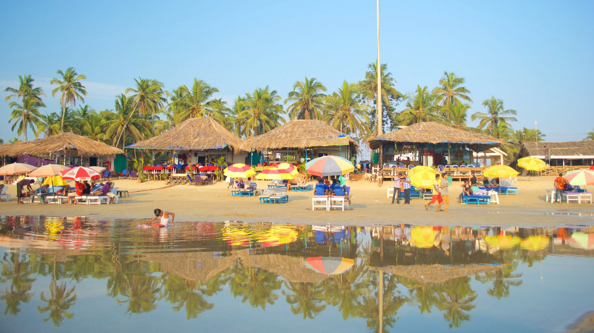
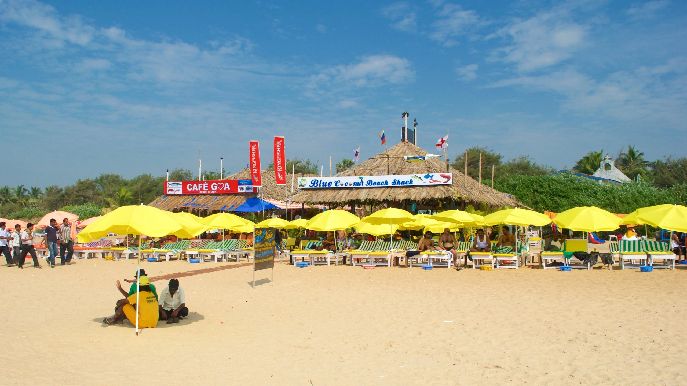

Overlooking the mighty yet gently-flowing Mandovi River, Panjim is Goa’s capital as well as the heart. It is a unique concoction of idyllic charm and lively events, with cobblestone streets, Portuguese colonial-era buildings, and lush acacia and Gulmohar trees beckoning tourists from far and wide. From serene beaches and quaint churches to impressive forts, pretty temples and even museums, Panjim or Panaji has everything that your heart seeks on a vacation. So, take a look at the 25 best places to visit in Panjim, Goa, and start planning that perfect itinerary.
1. Baga Beach
One of Goa’s most well-known seaside resorts, Baga Beach is famous for its beachside bars and nightclubs, where revelers party throughout the night. During the day, the wide, expansive stretch of sand is energetic and exuberant, with numerous options for water-based activities. Sunbathe and soak up the lively atmosphere, take part in exhilarating watersports activities and stick around post sunset for a taster of Baga’s nightlife.

2.Calangute Beach

The tourist-oriented Calangute Beach is packed with practical amenities and is full of life and excitement. All tastes and budgets are catered to here, whether you want to laze away an afternoon in the sun, sample the wonderful local cuisine or take part in waterspouts out on the water.